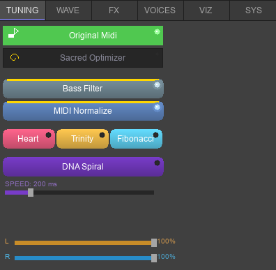
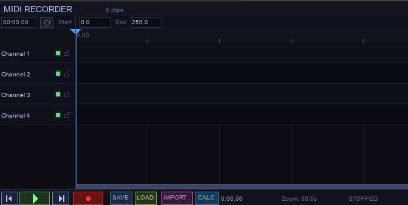
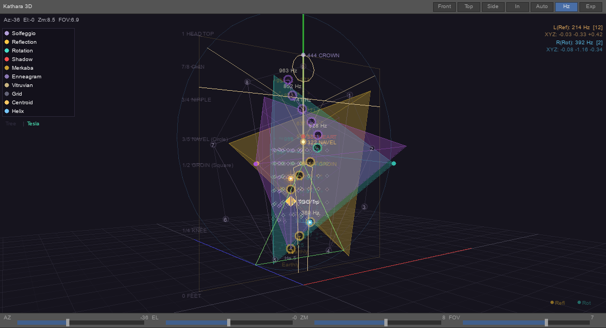
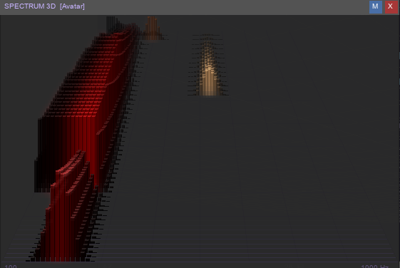
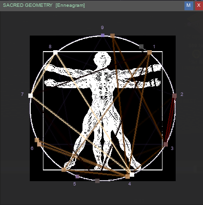
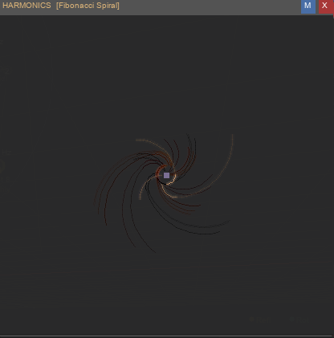
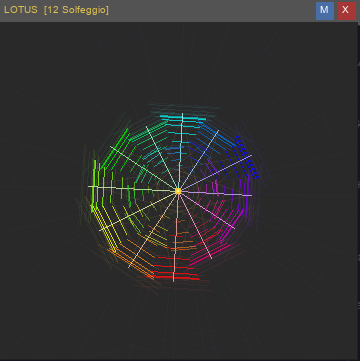
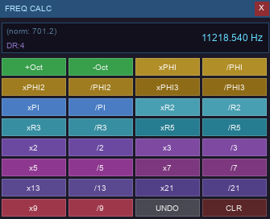

Kullanim Kilavuzu
QuantumSynth V3.5 Pro — adim adim kullanim rehberi
Standard vs Pro: Standard surumde Media Creator butonu (LOAD / SAVE / IMPORT / REC) calismaz. Sadece Pro surumde aktiftir.
Arayuz Yapisi
Program acildiginda sol ve sag paneller kapalidir. Kenarlardan surekleyerek acabilirsiniz.

Sol Panel
VOICES: Aktif sesleri gorur. FREQUENCY: Hz, NM, DIFF, MUL sutunlari. TUNING: Original Midi / Sacred Optimizer. WAVEFORM: Sine/Saw/Square/Triangle. FX: Harmonics, oktav, faz sliders.
Sag Panel
AVATAR (162): Reflection (81) ve Rotation (81) alt tablari. SHADOW (64): DNA codon frekanslari. Her buton bir frekans — tiklayin calsin.
Orta Alan
Kathara 3D gorunumu. Solfeggio frekanslari, Merkaba piramitleri, Vitruvian overlay. Tree/Tesla gorunum gecisi.
Alt Panel
MIDI Recorder / Timeline. 8 kanalli kayit ve duzenleme. VIZ tabinda 7 yuzebilir gorselleştirme penceresi.
Ilk Adimlar
1. Frekans Calmak
Sag paneli surekleyerek acin. AVATAR tabinda Reflection veya Rotation alt tabini secin. Herhangi bir butona tiklayin — o frekans calacaktir. Reflection butonlari sol kulakliktan, Rotation butonlari sag kulakliktan gelir.
2. MIDI Dosyasi Yuklemek
Ust menuden veya surukle-birak ile bir MIDI dosyasi yukleyin. Program otomatik olarak her notayi 342 frekans sistemindeki en yakin frekansa esler. Reflection notalari sola, Rotation notalari saga, Shadow notalari merkeze pan edilir.
3. Binaural Beat Aktivasyonu
MIDI calmayi baslattiktan sonra binaural motorlar devreye girer:
- Heart butonu: Theta Drone baslar (322+325 Hz, -18 dB). Muzik altinda subliminal calar.
- Trinity butonu: Heart + Body Key birlikte. 6 frekansli mukemmel denge.
- Fibonacci butonu: Heart Key + Fibonacci pozisyonlama.
Ipucu: Kulaklik kullanin! Binaural beat ancak kulaklikla calisir — sol ve sag kulaga farkli frekanslar gonderilir, beyin aralarindaki farki (3 Hz Theta) olusturur.
Tuning Sistemi

Pure Snap (Original Midi)
Varsayilan mod. MIDI notalari dogrudan 342 frekans sistemindeki en yakin frekansa snap edilir. Temiz ve net ses.
Sacred Optimizer
Brute-force optimizasyon: her notu 50 kutsal carpanla (phi, pi, e, sqrt turevleri) test eder. En yakin Avatar veya Shadow frekansina esleyen carpani secer. Sonucu FREQUENCY tabinda MUL sutununda gorebilirsiniz.
Media Creator (MIDI Recorder) PRO
Sadece Pro: LOAD, SAVE, IMPORT ve REC butonlari Standard surumde devre disidir. Bu ozellikler yalnizca Pro lisansiyla aktif olur.

Kayit ve Duzenleme
Alt paneldeki timeline'a not eklemek icin sag paneldeki frekans butonlarini surukleyin. Veya canli olarak tiklayarak kayit yapin. 8 kanala kadar destek.
Kutsal Geometri Playback
Kayitli veya import edilmis MIDI'yi DNA Spiral modunda oynatir. Binaural drone otomatik olarak baslar (Heart/Trinity/Fibonacci moduna gore). Gorsellestirme DNA sarmal yapisini canli gosterir.
WAV Export PRO
Stereo Dosya Kaydetme
Kayitli MIDI'yi stereo WAV olarak export edin. Cikti dosyasi Reflection=Sol, Rotation=Sag, Shadow=Merkez pan ile kaydedilir. Binaural beat dahildir. 44100 Hz, 16-bit stereo.
Gorsellestirmeler
Kathara 3D

Merkez alandaki 3D gorunum. Solfeggio frekanslari agac veya Tesla torus koordinatlarinda. Fare ile dondurme, zoom. Merkaba piramitleri (Compound of Three Tetrahedra) ve Vitruvian Man overlay. Canli frekans centroid gostergesi. AZ / EL / ZM / FOV sliders. Front / Top / Side / In / Auto / Hz / Exp butonlari.
Spektrum Goruntuleme

Aktif frekanslarin canli spektrum gorunumu. SPEC 1 (Avatar renklendirme) ve SPEC 2 (Chakra renklendirme) modlari.
Sacred Geometry — Enneagram

Enneagram 9 tip dairesi ve ic baglantilari. Vitruvian Man overlay ile insan anatomisi frekanslara esdestiriliyor.
Harmonics (Fibonacci Spiral)

Fibonacci sarmal gorsellestirmesi. Aktif seslerin harmonik dagilimlari canli gosterilir.
Lotus / Polar / Scope

VIZ sekmesinden 7 yuzebilir pencere acilabilir: Lotus animasyonu, Polar Rose, Osiloskov, Spektrum, Sacred Geometry, Harmonics, Kathara floating.
Frekans Hesap Makinesi Standard + Pro
CALC Butonu — Media Creator

CALC butonuna tiklayarak Sacred Frekans Hesap Makinesini acin.
- Frekans alanina tiklayarak deger girin (Enter ile onayla, Esc ile iptal)
- +Oct / -Oct: Oktav katlama / yari (x2 / /2)
- xPHI / /PHI: Altin Oran carpma / bolme
- xPI, xR2, xR3, xR5: Pi, Kok2, Kok3, Kok5 ile islem
- x2..x21, /2../21: Fibonacci ve Tesla harmonikleri
- UNDO: Son islemi geri al. CLR: 440 Hz'e sifirla
Klavye Kisayollari
| 1 | Pure Snap tuning |
| 2 | Sacred Optimizer |
| Space | Oynat/Durdur |
| H | Heart Activation |
| T | Trinity Mode |
Onemli: Kulaklik kullanin. Binaural beat ancak kulaklikla etki gosterir. Epilepsi hastalarinin doktora danismasi onemle tavsiye edilir. Yasal uyarilar